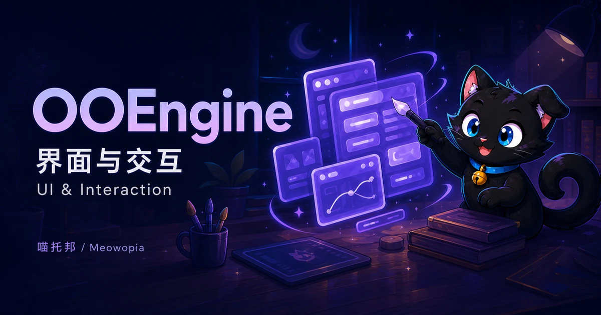

OOEngine 与 OOEngine-Client¶

OOEngine 在产品、Wiki 和 OOConsole metadata 中归入基础（Core）。该分类不改变独立仓库和版本，也不创建聚合 runtime；真实依赖保持 OOEngine hard-depend OOCore。
OOEngine 是闭源专有产品，也是 OO 系列的服务端表现引擎，负责把窗口文档、数据绑定、交互动作、资源清单和渲染计划安全地交付给客户端。OOEngine-Client 是 Fabric/NeoForge 原生渲染端。两者都强依赖 OOCore 提供生命周期、调度、服务注册和 Minecraft 版本适配。本页只公开产品能力、安装配置边界和受控 SDK 用法，不提供内部源码、私有 artifact 访问方式或安全实现细节。
术语
面向用户统一称为窗口（Window），扩展 OOEngine 的其他 OO 产品统一称为插件（Plugin）。现有 Java API 中的 PanelController、panelId 等属于稳定兼容标识，在计划好的 ABI 迁移前不会仅为改文案而破坏。
组件边界¶
| 组件 | 职责 | 不负责 |
|---|---|---|
| OOCore | 生命周期、Paper/Folia 调度、Capability、服务注册、服务器版本适配 | 窗口、RenderPlan、客户端渲染 |
| OOEngine | 窗口编译、绑定、动作、资源、会话、现有 Web Editor、协议 | 直接维护各 Minecraft 版本差异；OOConsole Contribution API |
| OOEngine-Client | Fabric/NeoForge renderer、输入、纹理/字体/遮罩 backend | 服务端业务数据和权限判定 |
| OOEngine 插件 | 注册自己的窗口、binding、action | 写入 OOEngine 私有目录或复制 renderer |
OOMenu 子项目¶
Window facade 在 1.1.4 中不完整：缺少 WindowController，Contribution 重复 ownerId，scope-derived owner validation 与 OOMenu server bootstrap/cleanup 未验收。因此 Window migration 为 runtime-blocked，禁止混用新 Window registration 与 legacy PanelController。Menu/Video 也仍需同等级完整性审计；后续只能 additive 修复，不覆盖 1.1.4。
1.1.6 stable
1.1.6 已作为闭源二进制稳定版发布；1.1.5 不得使用。
OOMenu 是所有业务插件接入 OOEngine 窗口系统的统一表现层门面。它负责 owner-scoped window contribution、窗口发现与 open/patch/close 安全编排、namespace/limits/revision/requestId 校验、插件卸载回收，以及通用 Menu 文档、应用目录和 preset。默认、MMO、mobile、phone、Android tablet 都是同一个 Menu 系统的 preset。玩家命令仍为 /oo engine menu，不存在独立 /oo menu 模块命令。
OOEngine core 继续拥有 UiDocument、RenderPlan、layout/expression/timeline、资源生命周期、协议与客户端 renderer；OOMenu 只消费这些能力，不复制引擎。公开契约仍由 ooengine-api 发布，实现归 :oomenu，因此插件只编译依赖 stable API，不编译依赖内部子项目。
依赖方向固定为：
OOChat / OOGame / OOMusic / OOBrowser / other plugins
→ ooengine-api（OOMenu window/menu facade contract）
→ :oomenu implementation
→ OOEngine core / RenderPlan / resources / protocol
现有 API v1 中的 PanelController、PanelContributionRegistry 与 ExtensionScope.panel(...) 暂时作为带退场版本的兼容 adapter，由 runtime 委托给 OOMenu；新插件不得直接依赖 OOEngine 的 PanelRepository、session manager、renderer、server/common implementation 或 data folder。
OOVideo 子项目¶
OOVideo 负责签名 video descriptor/manifest、来源策略、播放状态、seek、timeline 同步、窗口/surface 绑定、Capability negotiation、poster fallback、owner/session 生命周期、解码 worker、frame/audio delivery、client sink，以及尺寸、码率、时长、并发和资源预算。
历史 OOMedia 名称、:media module、oomedia-worker 和 Media* API 全部归并到 OOVideo，不再作为长期并列层或对外产品。迁移期只保留 deprecated compatibility adapter，并内部委托 OOVideo；业务插件不得直接调用 FFmpeg、worker、texture/audio sink 或内部 video implementation。OOBrowser 只负责 Chromium/Web surface，不能另建第二套通用视频协议。
Plugin
→ ooengine-api（OOVideo contract）
→ :oovideo
→ decoder worker / RenderPlan / resources / protocol / client backend
迁移还必须覆盖旧配置、环境变量、签名 pin、缓存和 worker artifact，并保持服务器 UID 隔离；只有 Fabric/NeoForge/FCL、MP4/WebM、签名、资源释放和长跑门禁通过后才能删除兼容壳。新接入只能使用 OOVideo。当前不增加独立 /oo video 模块命令。
OOQuest 子项目（planned）¶
OOQuest 只作为 OOEngine 内部任务接入接口存在，构建、依赖、生命周期和文档均归属 OOEngine > :ooquest。它不是独立插件，也不建立额外产品分类或独立 artifact/group/package。
它适配 BetonQuest、Typewriter、Quests、BeautyQuests、MMO/Mythio 任务源及未来 Provider，但不复制第三方数据库/状态机，也不裁定任务业务真相。Provider 始终负责权限、前置条件、推进和奖励事务。
任务 ID 使用 provider-owner namespace，snapshot 带 provider revision。accept/track/untrack/submit/abandon 携带 requestId、expectedRevision、actor UUID，并返回新 revision 与明确 code。客户端只提交 intent，不得上报完成度、奖励或状态；禁止 command/script/path/SQL。
任务窗口统一经 OOMenu Window facade，HUD tracker 归未来 OOHUD，OOConsole 只配置 adapter/显示映射与诊断。Typewriter 对话本身继续归对话/OOChat 边界。
common 中旧 com.zkonikishi.ooengine.api.quest.* 自 1.1.4 作为 deprecated compatibility shim 迁入 ooengine-api 并委托 OOQuest；整个 API 1.x 保持兼容，最早 API 2.0 删除。发布前消费者只等待，不自造 bridge。
OOEditor 子项目（planned）¶
OOHUD 子项目（planned）¶
OOModel 与 BetterModel adapter（planned）¶
OOModel 计划通过 BetterModel 官方 Bukkit API 提供 optional adapter：
BetterModel 官方项目采用 MIT 许可，是 server-based Bedrock/BlockBench model engine，基于 item-display packet，并公开 cubes、meshes、null objects、locators、animation、Molang、IK、player skin/custom armor、resource-pack generation 和 entity sync 等能力。OOModel 只使用其官方 API，不复制、内嵌或反射内部实现，也不强制安装 BetterModel。缺失或版本不兼容时只禁用 adapter，不影响 OOEngine/OOModel 其他 Provider。BetterModel 官方仓库
adapter 实现前必须锁定 Capability，管理 tracker 生命周期，并覆盖 entity/player quit、chunk unload、plugin disable 清理、Folia 线程策略及 resource-pack 冲突策略。当前没有已核验正式产物，因此状态仅为 planned。
安装¶
- 服务端安装匹配版本的
OOCore和OOEngine。 - 玩家安装与 Minecraft 版本、loader 对应的
OOEngine-Client，Fabric 与 NeoForge 包不能混用。 - 首次启动后检查
plugins/OOEngine/config.yml。 - 执行
/oo core确认 OOCore adapter 与 Capability 正常。 - 执行
/oo engine info检查 OOEngine，再用/oo engine open menu打开默认窗口。
OOCore 处理 Minecraft/Paper/Folia 版本差异。OOEngine 与业务插件不得自行判断 26.1、26.1.2、26.2；服务器升级时优先更新 OOCore provider。
配置 / Configuration¶
plugins/OOEngine/config.yml：runtime 主配置。plugins/OOEngine/panels/*.yml：首次安装窗口模板。web-editor-oredentials.yml：安全原子生成文件，禁止手工修改或提交。examples/phone-themes.yml：当前没有 loader，仅 planned example。- JSON theme：没有已验收 loader；JSON 禁止注释，不得宣称可用。
联系 / Contact¶
- 作者 / Author: zkonikishi
- QQ: 276098266
- Discord: https://discord.gg/KPq2fZHFK
- ifdian
- QQ群 / QQ Group: 1063369777
常用命令¶
| 命令 | 说明 | 权限 |
|---|---|---|
/oo engine |
打开自己的默认菜单窗口 | ooengine.ui.command |
/oo engine menu |
打开自己的菜单窗口 | ooengine.ui.command |
/oo engine open <window> |
打开指定窗口 | ooengine.ui.command |
/oo engine close |
关闭自己的活动窗口 | ooengine.ui.command |
/oo engine quests |
打开任务日志 | ooengine.ui.command |
/oo engine map |
打开地图 | ooengine.ui.command |
/oo engine reload |
legacy route：原子重载配置与窗口 | ooengine.ui.admin.reload |
/oo engine list |
列出窗口 | ooengine.ui.command |
/oo engine info |
显示运行状态 | ooengine.ui.command |
/oo engine version |
显示版本 | ooengine.ui.command |
/oo engine admin reload |
原子重载配置与窗口 | ooengine.ui.admin.reload |
/oo engine admin editor |
管理编辑器 | ooengine.ui.admin.editor |
/oo engine admin open <window> <player> |
为玩家打开窗口 | ooengine.ui.admin.open |
/oo engine admin close <player> |
关闭玩家窗口 | ooengine.ui.admin.close |
/oo engine admin debug |
输出诊断 | ooengine.ui.admin.debug |
/oo engine admin web <player> <url> [transparent] |
打开受策略限制的 Web 表面 | ooengine.ui.admin.web |
旧入口若仍在某个过渡构建中可作为 legacy alias，但文档、脚本和新集成不得继续依赖它。
窗口文件¶
plugins/OOEngine/config.yml
plugins/OOEngine/panels/*.yml
plugins/OOEngine/assets/**
plugins/OOEngine/storage/**
磁盘目录 panels/ 和 API 类型中的 Panel* 暂时保留，以避免无意义破坏兼容性；产品术语仍为“窗口”。
最小窗口示例：
panel:
id: example:hello
title: "示例窗口"
size: 420x240
anchor: center
ohildren:
- type: text
id: greeting
text: "你好，${player.name}"
size: 18
- type: button
id: close
text: "关闭"
on-click: close
窗口 ID 必须带受控 namespace。插件只能注册自己的 namespace，不能覆盖 Core 或其他插件的窗口。
Menu 预设：Android 平板¶
OOMenu 归属
Android 平板只是 OOEngine 通用 menu 窗口的一种主题与响应式布局 preset，与 MMO、mobile、phone presets 同级。它不是独立插件、模块、窗口分类、Console workspace 或导航点；不得创建 tablet module、command、registry、database、config root 或 tablet 专用 Capability。OOEngine 仍通过同一个 Menu 系统负责平板机身、安全区、状态栏、桌面分页、Dock、应用图标布局、窗口切换动画、横竖屏、GUI Scale 和主题资源。
平板内的应用仍由各插件拥有：
| 应用入口 | 所属插件 | 目标窗口示例 |
|---|---|---|
| 玩家信息、设置、任务入口 | OOEngine 内置或配置的 provider | ooengine:profile、ooengine:settings |
| 聊天、好友、邮件 | OOChat | oochat:main |
| 游戏大厅 | OOGame | oogame:lobby |
| 音乐播放器 | OOMusic | oomusic:main |
| 受控网页 | OOBrowser | oobrowser:main |
插件应用入口只能通过未来的通用 owner-scoped Menu contribution 注册，不得修改 Menu/平板窗口文件、写入 OOEngine data folder 或复制菜单实现。贡献数据应限制为应用 ID、显示名、受控图标资源、目标窗口、排序、可见性和 bounded badge snapshot；点击结果仍由 OOEngine 的服务端权威 action/session 校验。
平板预设不得独立持久化另一套应用目录；玩家的主题、壁纸、应用排序和方向偏好继续归通用 Menu 配置与玩家偏好模型。
插件窗口接入统一经 OOMenu（planned）¶
以后 OOChat、OOGame、OOMusic、OOBrowser 等插件使用窗口能力时，只编译依赖 ooengine-api 暴露的 OOMenu Window/Menu facade contract。runtime 路径固定为：
OOMenu 负责 owner-scoped window contribution、Menu app entry、窗口发现/open/patch/close 编排、namespace/limits/revision/requestId 校验和 lifecycle 撤销。业务插件禁止直接依赖 server/common implementation、PanelRepository、session manager、renderer 或 OOEngine data folder。
API v1 中已有的 PanelContributionRegistry、PanelController、ExtensionScope.panel(...) 自 1.1.4 标记 Deprecated(forRemoval=false)，整个 1.x 由 runtime 委托 OOMenu；最早 API 2.0 才允许删除，目前不设日期。新代码统一使用 Window 术语；新插件等待正式 Window/Menu facade API 发布，不得继续接 legacy panel API，也不得自造本地 bridge。
渲染管线¶
UiDocument
→ Style / Layout
→ Expression evaluation
→ Timeline sampling
→ immutable RenderPlan
→ Web / Fabric / NeoForge executor
Web、Fabric、NeoForge 必须消费同一个版本化 RenderPlan schema。后端不支持的能力必须明确报告，不能静默产生另一套布局或换行结果。
OOVideo 视频 facade（planned）¶
Plugin → ooengine-api (OOVideo contract)
→ :oovideo
→ OOVideo Worker + OOEngine RenderPlan/resources/protocol + client backend
:oovideo 统一处理签名 descriptor/manifest、source policy、play/pause/seek/stop、timeline sync、surface/window binding、capability negotiation、poster fallback、owner/session lifecycle、OOVideo Worker、platform/FFmpeg decode、frame/audio delivery、client sink、FCL backend、资源/显存/音频释放和媒体预算。插件不得直接调用 worker、FFmpeg、texture/audio sink、浏览器或 internal video implementation。
OOBrowser 只负责 Chromium/Web surface。网页视频进入 OOEngine video surface 时也必须经过 OOVideo policy。旧 OOMedia 命名、:media、worker artifact/package 和 Media* API 不能立即删除，应先作为有版本的 deprecated compatibility shim 委托 OOVideo，并建立 artifact/config/cache/pin 原子迁移、回滚和退场版本；新插件不得继续使用。迁移期间禁止保留两套 decoder/session/cache。
首版公开类型为 OOVideo、OOVideoScope、VideoContribution/VideoDescriptor、VideoController、VideoSession、VideoState/VideoResult。owner 由 openScope(owner) 固定，DTO 不得自报 owner；插件注册 namespaced videoId 和受策略资源引用。controller 针对 UUID/window surface 执行 open/play/pause/seek/stop/close，mutation 必须带 requestId/revision，结果必须 immutable、bounded。禁止任意 URL/path/command/script，也禁止接触 worker/decoder/sink。
RenderPlan 2.0 范围¶
- Transform、pivot、父子矩阵、opacity、z-index、blend；
- Solid Quad、Image、NineSlice、Linear/Radial/Conic Gradient；
- border、radius、shadow、glow、backdrop blur、noise；
- reot、rounded、ellipse、alpha、inverse、soft、nested mask；
- Text/RiohText、Model/Entity/Player、AnimatedImage/Video；
- 固定 timestep 的 timeline、easing、循环、反向、事件和状态混合；
- 节点、深度、字符串、资源和表达式预算；拒绝 NaN/Infinity，未知 payload 安全跳过。
当前状态
字体下发、服务器 UID 隔离、TextStyle、运行时资源包和既有截图门禁已经完成；这不等于 RenderPlan 2.0 的全部图片、材质、遮罩、动画与三端验收均已完成。
字体与文字一致性¶
服务器和三个预览/渲染端必须使用同一 TextMetricsProvider 结果：glyph advance、kerning、ascent/descent、baseline、grapheme、emoji、CJK 禁则与 fallback。布局阶段决定换行，renderer 不得再自行执行另一套换行算法。
资源安全¶
- 支持的资源必须经过 MIME 与魔数双重验证；
- 图片验证尺寸、像素总量、帧数和解压比例；
- 设置磁盘/显存配额、LRU、并发和下载大小限制；
- 外部媒体需要协议白名单、签名、精确 origin 与 worker 沙箱；
- 插件不能传任意本地路径，也不能覆盖其他 owner 的资源；
- player quit、server switch、插件 disable 后清理 session、listener、task、texture 和 framebuffer。
插件 SDK¶
公开 SDK 用法：
接入要求：
- 从 Paper
ServicesManager获取OOCoreApi和OOEngineApi； - 校验 ABI、handshake 和 API version；
- 对每项所需 Capability 单独
require，不得只依赖模糊 umbrella； - 使用
openScope("plugin-id")统一持有 binding、action、window contribution； - 注册失败立即 rollback，disable 时幂等
close()； - 不缓存
Player、Plugin、World 等运行时对象，只保存 UUID 和不可变 DTO； - action 使用 requestId、revision、payload limit 与服务端权威校验；
- 测试重复 enable/disable、player quit、部分注册失败和最终零资源。
上述示例中的 scope.panel(...) 属于 API v1 legacy adapter，仅用于解释现有兼容行为，不是新插件推荐入口。新插件应等待 OOMenu stable Window/Menu facade 正式发布。
Web Editor 与 OOConsole 迁移¶
implemented：OOEngine 当前内置 Web Editor，并提供玩家侧 /oo engine admin editor / F8 编辑模式。默认使用非特权端口；远程访问前必须配置安全 Cookie、CSRF、同源策略、登录限流、会话过期和 reverse proxy HTTPS。编辑输出仍需通过相同 schema、UiLimits 与资源策略。
planned：独立仓库、独立版本、独立插件 OOConsole 将提供统一管理入口，Editor 成为其工作区。OOConsole 运行时硬依赖 OOCore 与 OOEngine，并复用 OOEngine 的窗口 schema、RenderPlan、资源、预览和 Editor engine，禁止另造一套。OOConsole Contribution API 归 OOConsole stable API/Capability 所有。
迁移验收完成前，禁止删除 OOEngine Web Editor 源实现。OOEngine 插件不得为了接入管理后台而直接写 Web Editor 目录；管理视图应通过未来的 owner-scoped OOConsole Contribution 注册。
验收¶
稳定发布前至少执行：
- Web 重复截图像素 diff 为 0；
- Fabric/NeoForge 指定帧截图并记录诚实容差；
- GUI Scale 1–4、常见宽高比和 FCL/OpenGL ES；
- 1000/5000 节点、100 图片、20 渐变、10 遮罩、100 动画压力测试；
- 100 轮插件 enable/disable、玩家 join/quit、切服和长跑泄漏门禁；
- JAR foreign API 扫描、许可证、SHA256、旧品牌扫描；
- 测试后仅核验本任务拥有的 JVM PID；无法证明 ownership 时不得终止，禁止全局 Java/javaw 为 0 门禁。
故障排查¶
/oo engine提示未知模块：确认 OOEngine 已成功向 OOCore 注册enginemodule，并先检查/oo core。- 窗口打不开：确认玩家安装匹配版本的 OOEngine-Client，并检查
ooengine:mainchannel。 - Folia 异步异常：业务插件不得直接猜线程，必须经 OOCore scheduler facade。
- 编辑器能预览但客户端不同：检查是否由两端自行布局/换行，所有端必须消费同一 RenderPlan。